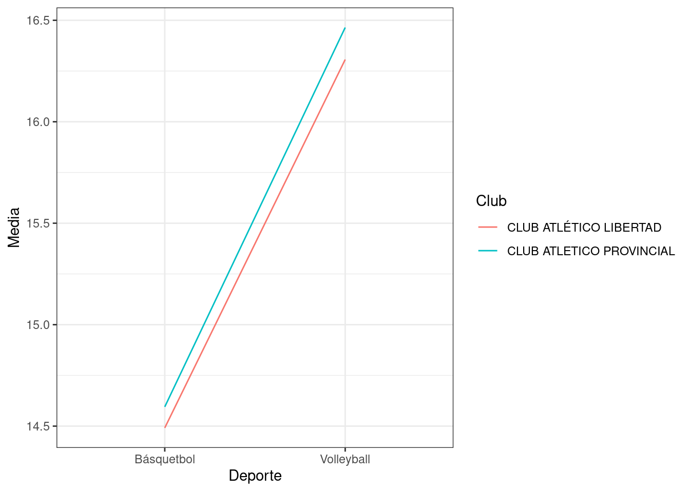

ANOVA para dos criterios de clasificación cruzados sin interacción
Análisis en el que se presentan dos factores de clasificación (con dos o más niveles cada uno). El término cruzado indica que cada nivel de un factor puede combinarse con cada nivel del otro factor. El objetivo es conocer si estos factores influyen en el comportamiento de una variable (respuesta) continua y gaussiana a través de un Análisis de la Variancia (ANOVA).
Los datos brindados corresponden a una muestra de deportistas federados, de 18 a 22 años de la ciudad de Rosario. Se desea conocer si existen diferencias significativas en el resultado medio del “test de Coordinación en 4 tramos de 10 metros cada tramo” entre los deportistas teniendo en cuenta el deporte en el que compiten y el club en el que se entrenan.
Factor 1: Deporte (Volleyball-Básquetball)
Factor 2: Club (Club Atlético Libertad-Club Atlético Provincial)
# Gráfico de perfiles (para evaluar interacción entre factores)base_factores %>%group_by(deporte, club) %>%summarise(media =mean(coord) ) %>%ggplot(aes(x=deporte,y=media,group=club,color=club)) +geom_line() +theme_bw() +labs(y="Media", x="Deporte",color="Club")
`summarise()` has grouped output by 'deporte'. You can override using the
`.groups` argument.

Se puede observar que los tiempos en realizar el test de coordinación difieren dependiendo del deporte que practican los deportistas, los jugadores de basquetball en promedio realizan el test más rapidamente que los jugadores de volleyball. Con respecto al club, no parece haber diferencias entre los deportistas de clubes distintos.
En este modelo, a través de la interacción, se postula que el efecto de deporte en el resultado del test de coordinación de los deportistas depende del club.
A continuación, se muestra la tabla ANOVA:
# Tabla ANOVAanova <-aov(coord~deporte*club, base_factores)summary(anova)
Df Sum Sq Mean Sq F value Pr(>F)
deporte 1 58.50 58.50 58.304 1.3e-10 ***
club 1 0.28 0.28 0.274 0.602
deporte:club 1 0.01 0.01 0.011 0.916
Residuals 65 65.21 1.00
---
Signif. codes: 0 '***' 0.001 '**' 0.01 '*' 0.05 '.' 0.1 ' ' 1
Call:
lm(formula = coord ~ deporte * club, data = base_factores)
Residuals:
Min 1Q Median 3Q Max
-2.2445 -0.5650 0.0350 0.7055 2.3233
Coefficients:
Estimate Std. Error t value
(Intercept) 14.49143 0.26770 54.133
deporteVolleyball 1.81524 0.39405 4.607
clubCLUB ATLETICO PROVINCIAL 0.10357 0.37859 0.274
deporteVolleyball:clubCLUB ATLETICO PROVINCIAL 0.05424 0.51140 0.106
Pr(>|t|)
(Intercept) < 2e-16 ***
deporteVolleyball 1.96e-05 ***
clubCLUB ATLETICO PROVINCIAL 0.785
deporteVolleyball:clubCLUB ATLETICO PROVINCIAL 0.916
---
Signif. codes: 0 '***' 0.001 '**' 0.01 '*' 0.05 '.' 0.1 ' ' 1
Residual standard error: 1.002 on 65 degrees of freedom
Multiple R-squared: 0.4741, Adjusted R-squared: 0.4498
F-statistic: 19.53 on 3 and 65 DF, p-value: 3.877e-09
El test de hipótesis para responder al efecto interacción se plantea como: \(H_0)\) No hay interacción versus \(H_1)\) Hay interacción. Que no haya interacción es que el efecto deporte es el mismo para cualquier club: \(\mu_{11} - \mu_{21} = \mu_{12} - \mu_{22}\), luego la hipótesis en términos de los parámetros resulta: \(H_0) \mu_{11} - \mu_{21} = \mu_{12} - \mu_{22}\)
En base a la evidencia muestral y con un nivel de significación del \(5\%\), no se rechaza la hipótesis nula, es decir, no hay efecto interacción entre deporte y club. El efecto del deporte sobre el cambio del resultado del test de coordinación de los deportistas no depende del club en el que entrenan.
Como la interacción del modelo no resultó significativa, se puede proceder a probar que sucede con los efectos principales, a partir de las siguientes hipótesis:
En base a la evidencia muestral y con un nivel de significación del \(5\%\), se concluye que el deporte que practica el deportista influye significativamente sobre el resultado en el test de coordinación. En cambio, el club en el cual entrenan no influye significativamente sobre la respuesta.
Comparaciones múltiples
En este caso, como el único efecto principal que resultó significativo fue ‘Deporte’ y este sólo tiene dos niveles no tendría sentido realizar comparaciones múltiples. A fines de mostrar como se continuaría el análisis, se presentan comparaciones múltiples pensando en que la interacción entre los factores hubiera sido significativa. Se comparan 6 medias, cruzando los niveles de ambos factores: \(H_0) \ \mu_{ij} = \mu_{i'j'}\) versus \(H_1) \ \mu_{ij} \neq \mu_{i'j'}, \ \forall \ i < i' \ , \ j<j'\)
$emmeans
deporte club emmean SE df lower.CL upper.CL
Básquetbol CLUB ATLÉTICO LIBERTAD 14.5 0.268 65 14.0 15.0
Volleyball CLUB ATLÉTICO LIBERTAD 16.3 0.289 65 15.7 16.9
Básquetbol CLUB ATLETICO PROVINCIAL 14.6 0.268 65 14.1 15.1
Volleyball CLUB ATLETICO PROVINCIAL 16.5 0.186 65 16.1 16.8
Confidence level used: 0.95
$contrasts
contrast
Básquetbol CLUB ATLÉTICO LIBERTAD - Volleyball CLUB ATLÉTICO LIBERTAD
Básquetbol CLUB ATLÉTICO LIBERTAD - Básquetbol CLUB ATLETICO PROVINCIAL
Básquetbol CLUB ATLÉTICO LIBERTAD - Volleyball CLUB ATLETICO PROVINCIAL
Volleyball CLUB ATLÉTICO LIBERTAD - Básquetbol CLUB ATLETICO PROVINCIAL
Volleyball CLUB ATLÉTICO LIBERTAD - Volleyball CLUB ATLETICO PROVINCIAL
Básquetbol CLUB ATLETICO PROVINCIAL - Volleyball CLUB ATLETICO PROVINCIAL
estimate SE df lower.CL upper.CL
-1.815 0.394 65 -2.854 -0.776
-0.104 0.379 65 -1.102 0.895
-1.973 0.326 65 -2.833 -1.114
1.712 0.394 65 0.673 2.751
-0.158 0.344 65 -1.064 0.749
-1.869 0.326 65 -2.729 -1.010
Confidence level used: 0.95
Conf-level adjustment: tukey method for comparing a family of 4 estimates
Como era de esperarse, las comparaciones que resultan significatiavas (el intervalo de confianza de los pares comparados no cubre al cero) son las que comparan diferentes deportes.
El análisis se finaliza con la comprobación de los supuestos de normalidad, homocedasticidad e independencia.